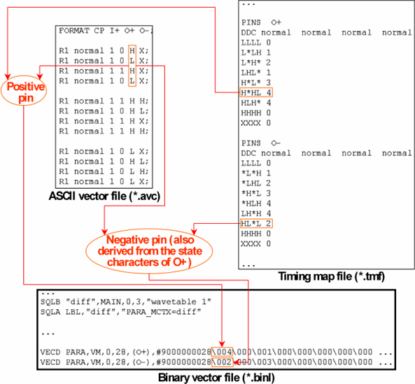

Translating ASCII Vectors with Differential Pins
If the ASCII vector file contains differential pins, only the state characters of the positive pin are evaluated. The negative pin, if present, is ignored. The state characters of the positive pin are not only used to create the waveform DC/DC power units for the positive pin, but also those for the negative pin. The following figure gives an example:

Observe the following points in the figure:
- The SQLA command serves to specify the context of the pattern, which has the name diff.
- The timing map file entries for the O+ and O- pins were created with the help of an x-mode control file using evaluation by signal (see Evaluation by Signal (the Mapping Operator ‘=>')).